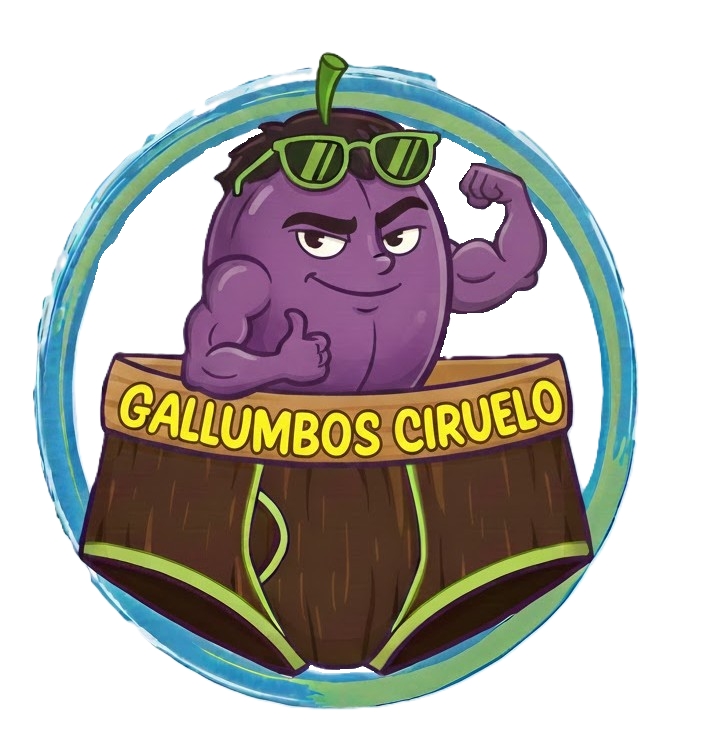

Clásico
Nada como el clásico gallumbo que llevaba tu padre. Con apertura central para evitar esfuerzos.
16 €CONFORT PARA CIRUELOS EXIGENTES
En Gallumbos Ciruelo comprendemos la importandcia de mantener tu ciruelo cómodo y preparado para lo que pueda suceder. Por ello, presentamos nuestos revolucionarios gallumbos que se adaptan a todo tipo de necesidades.
Nuestros gallumbos se hacen únicamente por encargo y son fabricados 100 % con lana de alpaca taiwanesa. Una vez hayas elegido entre los productos de nuestro catálogo, accede a nuestro formulario de contacto para realizar tu pedido. En menos de 24h nos pondremos en contacto con usted.
Nada como el clásico gallumbo que llevaba tu padre. Con apertura central para evitar esfuerzos.
16 €
Con este gallumbo no necesitas vestirte para los breves momentos en los que sales de casa.
21,57 €El ya clásico bóxer, ideal para el día a día. Alimentar cada 8 horas.
3,86 €
Con nuestro modelo Honestidad, no tendrás que excusarte ni perdir perdón nunca más.
!69 €
Con este gallumbo podrás salir sin miedo a perder la honra.
59,99 €
¿Harto de pedos traidores? Nadie te volverá a mirar mal gracias a este modelo. Se recomienda no lavar.
0,25 €Con el módelo descapotable no volverás a sufrir por apretones explosivos. Siempre preparado para emergencias.
9,85 €
Para trinfadores que no pierden el tiempo. No dejes que ninguna distracción física te aparte de tu camino al éxito.
98 €Gallumbos Ciruelo es una marca familiar que pone por delante la satisfacción del cliente. La reseñas verificadas de nuestros clientes nos avalan.

★★★★★
"Cómo informático necesitaba unos gallumbos que se adaptaran a mis necesidades. En Gallumbos Ciruelo encontré lo que necesitaba. El gallumbo Dodot me permite trabajar sin preocupaciones fisiológicas para centrarme en generar enormes ingresos. Y agradezco profundamente al modelo Castidad que me mantenga firme en el camino de la honra, incluso frente al irresistible sex-appeal que, como informático, desprendo por naturaleza. Una compra imprescindible para quienes, como yo, combinamos productividad y dignidad.”